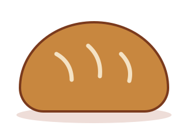

Pan de masa madre, horneado cada mañana.
Hogazas de fermentación lenta, harina molida en piedra y un horno que se enciende a las cinco.
Ver horarios
Abrimos de martes a domingo. El pan de centeno sale los jueves.
Qué horneamos
- Hogaza de trigoCorteza gruesa, miga abierta, 36 horas de fermento.
- Centeno integralDenso y ácido, para cortar fino.
- Pan de aceiteMasa con aceite de oliva, ideal para tostar.
Horarios
- Martes a viernes
- 7:30 a 14:00
- Sábado y domingo
- 8:00 a 13:30
- Lunes
- Cerrado
Dónde estamos
Calle del Molino 14, barrio de San Lorenzo.
Los encargos para el fin de semana se piden en el mostrador hasta el jueves.
Dirección de ejemplo: el negocio es ficticio.